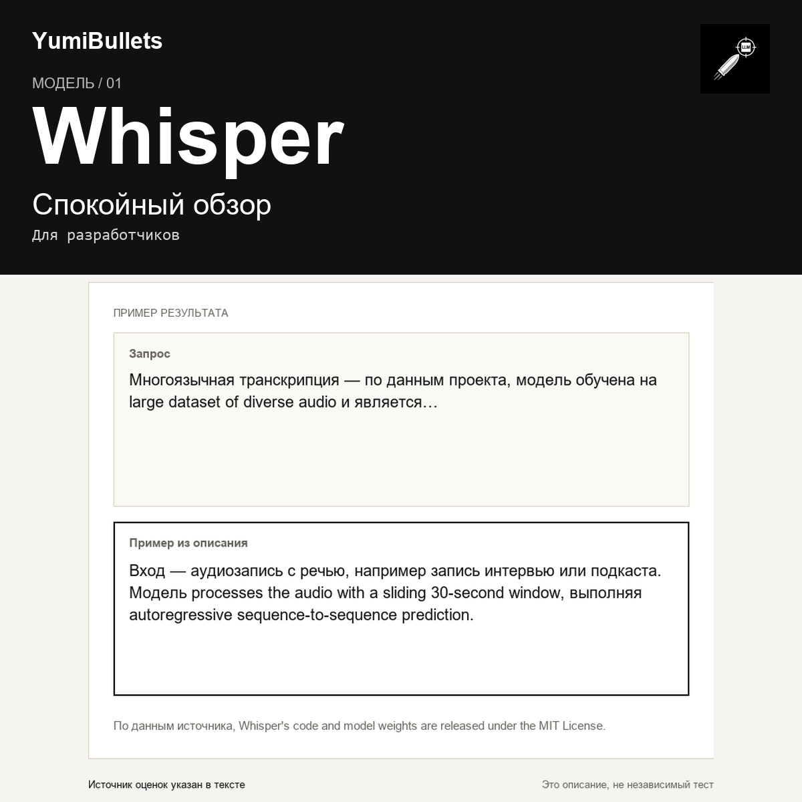

Whisper от OpenAI: открытая модель распознавания речи — что учесть перед подключением
Выбираете готовую модель для распознавания речи и хотите понять, на что она способна ещё до интеграции. Разбираем Whisper по официальной документации проекта: задачи, требования…